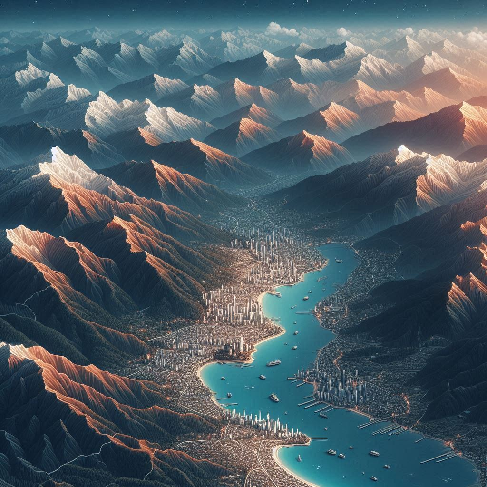
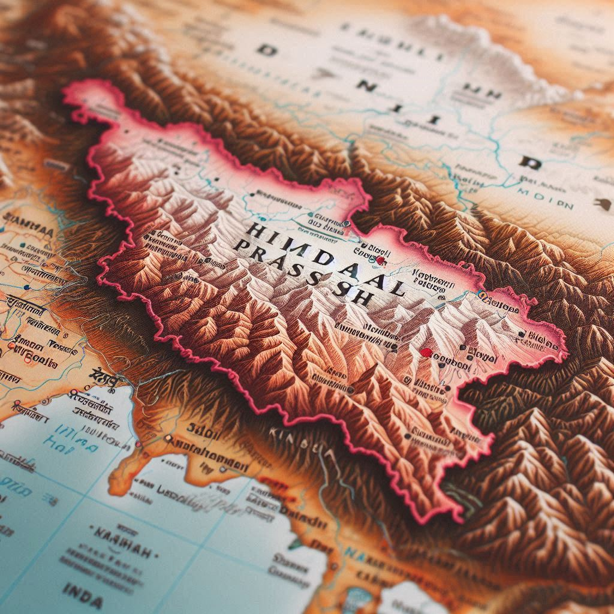

Himachal Pradesh is a northern Indian state nestled in the western Himalayas. It is characterized by its breathtaking landscapes, ranging from snow-capped mountains, lush green valleys, deep gorges, fast-flowing rivers, and dense forests, to picturesque lakes. Here’s a closer look at its geographical location:
1. Location and Borders
- Latitude and Longitude: Himachal Pradesh lies between latitudes 30°22' N and 33°12' N and longitudes 75°47' E and 79°04' E.
- Borders: It shares borders with several Indian states and union territories:
- North: Jammu and Kashmir and Ladakh
- West: Punjab
- Southwest: Haryana
- Southeast: Uttarakhand
- East: Tibet Autonomous Region of China
2. Topography
- Himalayan Ranges: Himachal Pradesh is divided into three distinct geographic regions:
- Shivalik Hills (Outer Himalayas): These are the foothills, with an altitude ranging from 350 to 1,500 meters. The lower elevation and mild slopes make this region more suitable for agriculture.
- Lesser Himalayas (Middle Himalayas): This region has altitudes ranging from 1,500 to 4,500 meters and includes popular tourist destinations like Shimla, Kullu, and Manali. The climate here is moderate and suitable for horticulture.
- Greater Himalayas (High Himalayas): With altitudes exceeding 4,500 meters, this region is home to towering peaks, glaciers, and cold deserts, including areas like Lahaul-Spiti and Kinnaur. It experiences harsh climatic conditions, including heavy snowfall.
3. Rivers
- The state is crisscrossed by numerous rivers and streams, primarily originating from glaciers. Major rivers include the Sutlej, Beas, Ravi, Chenab, and the Yamuna. These rivers are a vital source of water for the state and support agriculture, hydropower projects, and biodiversity.


4. Climate
- Himachal Pradesh experiences a diverse climate, ranging from tropical in the lower regions to cold and alpine in the higher altitudes. The state’s climate is influenced by its elevation, with temperatures ranging from sub-zero in the winter months in high-altitude regions to mild and pleasant weather in the lower areas.
5. Flora and Fauna
- The varied topography and climate support diverse flora and fauna. Himachal is home to dense forests of deodar, pine, oak, and rhododendron, as well as alpine meadows. The state is rich in wildlife, with species like snow leopards, Himalayan monals (state bird), musk deer, and more.
6. Tourist Attractions
- Himachal Pradesh’s geographical diversity makes it a paradise for tourists. It offers destinations for trekking, skiing, river rafting, paragliding, and mountaineering. Key tourist spots include Shimla, Manali, Dharamshala, Dalhousie, Kasauli, Lahaul-Spiti, and more.
Conclusion
Himachal Pradesh’s geographical location and diverse topography contribute to its reputation as the "Land of the Gods" or "Dev Bhumi." It is a land of scenic beauty, biodiversity, and cultural richness, offering a unique mix of mountains, valleys, and rivers that captivate residents and visitors alike.